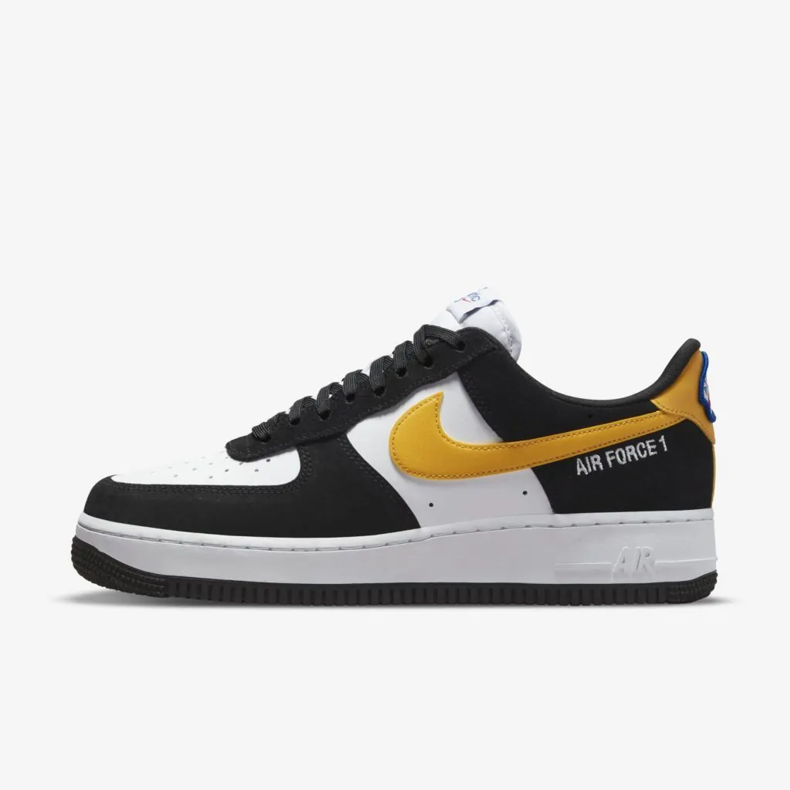

ShoesLanger
Sua loja de tenis!
Na ShoesLanger voce encontrará seu tenis pelo melhor preço e qualidade possivel!
Conheça nossos melhores produtos!!
Air force 1
O tênis nasceu no basquete e, desde 2012, a NIKE vem usando o mês de dezembro para festejar o seu aniversário. Por isso, preparamos um post especial, que relembra um pouco da trajetória desse que virou símbolo das ruas nova-iorquinas e já foi cultuado nas mais diversas oportunidades.
Air Jordan

Foi criada para o ex jogador e cinco vezes o MVP da NBA Michael Jordan . O tênis Air Jordan original foi produzido exclusivamente para Michael Jordan no início de 1984 e lançado ao público no final de 1984.
Nike Dunk

Foi começo dos anos 2000 que o Dunk começou a sair da geladeira, com uma versão lançada pelo departamento de skateboarding da Nike. O SB Dunk foi um enorme sucesso e ganhou várias colaborações (o que era novidade na época) que impulsionaram o que conhecemos hoje como “cultura sneaker”. Os mais famosos foram o “Black Cement”, feito com a Supreme, de 2002; o “Tiffany”, com a Diamond Supply Co., de 2005; e o “Pigeon”, com a Staple, no mesmo ano.